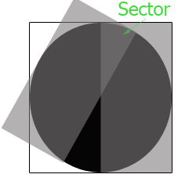
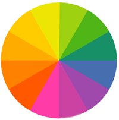
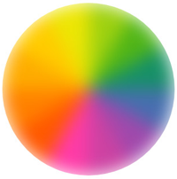

When I enjoyed Zhangxinxu's blog, I found he did a colorful circle just using CSS3, amazing! And I learned that idea, and found if we could let the circle rotate infinite, it looks like a loading circle, right?
So how to make a circle like this? First we should make a sector like below, apparently, if we make 12 sectors with different color, then they can form a coloful circle.
However, how to create a sector, that's a little bit difficult. Let's look the following picture, if we want a sector, we should create a circle first, and use clip attribute which can allow only the right half circle appear. Then we will use ":after" pesudo element and set the same clip attribute for it with rotate action.

Ok, we can create 12 sector like this to form a circle like below:

In order to get smooth edge, we should use "blur" for every sector, and then we should use "scale" attribute to prevent the blur pixels going out of the circle. For example, we give a class name for all sectors, and use the css code like below.
.circle-group {
width: 100%; height: 100%;
-webkit-filter: blur(15px);
filter: blur(15px);
transform: scale(1.2);
}

Ok, until this step, we have finished most work, but how to make it rotate as a loading picture? Can we add animation to the circle? No, it doesn't work. The key is to add animation to every sector like below:
.circle-group i {
width: 100%; height: 100%;
clip: rect(0 200px 200px 100px);
position: absolute;
overflow: hidden;
animation: loop 3s linear infinite;
}
@keyframes loop {
from {
transform: rotate(0);
}
to {
transition: rotate(360);
}
}
Ok, everything has done! What? How about the second loading animation? Haha, we should use the last blog's tech/skill to get it! It's "mask" attribute, and we will use css gradient as the mask image.
.circleline {
width: 200px; height: 200px;
border-radius: 50%;
position: relative;
overflow: hidden;
-webkit-mask: radial-gradient(transparent, transparent 70px, #000 82px);
mask: radial-gradient(transparent 70px, #000 82px);
}
Finally, thanks Zhangxinxu's idea, he is brilliant and smart, talented in front end development. Thanks!
(That's all)